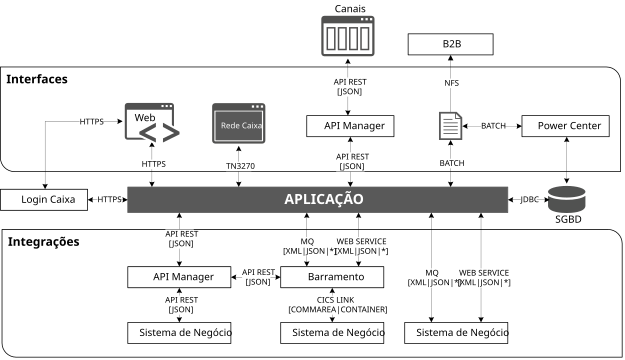
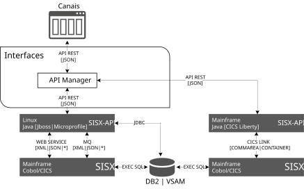

Integrações
Modalidades de Integração

API REST
A integração síncrona entre aplicativos de plataforma baixa deverá ocorrer por meio de APIs RESTful, cujos padrões e boas práticas para o desenvolvimento, bem como processo de governança em vigor estão disponíveis em https://portalapi.caixa/.
Observação: Quando houver indicação de reuso ou a necessidade de exposição externa das APIs, elas deverão ser publicadas no API Manager.
Importante: A necessidade de publicação no API Manager nos demais casos deverão ser avaliadas pela área detentora do mandato de Governança de APIs.
Definições de como desenvolver APIs REST para aplicações CICS estão descritas no item Desenvolvimento de APIs a partir na Plataforma Alta.
Barramento (IIB ou Broker)
O uso do barramento (IBM Integration Bus/Broker) permite o desenvolvimento de serviços de diversos tipos (APIs REST, Web Services SOAP, MQ etc.).
Seu uso é indicado para os casos onde o serviço a ser desenvolvido necessita de orquestração de dois ou mais sistemas, transformação de mensagens e a utilização múltiplos protocolos.
Importante: Atualmente, o uso do barramento está restrito à orquestração de sistemas na plataforma alta.
CICS-to-CICS
Chamadas CICS-to-CICS ocorrem na plataforma alta e devem e são usadas nos casos em que transações de sistema executado em um CICS TS necessitam executar transações de outro CICS TS.
Observação: Com o objetivo de reduzir o acoplamento entre as aplicações, a comunicação CICS-to-CICS será realizada, preferencialmente, por START.
Importante: Deve ser evitado o desenvolvimento, na plataforma alta, de "sistemas portais" cuja única função seja orquestrar transações de outros sistemas de negócio.
MQ (Message Queue)
O uso do IBM MQ deve ocorrer somente para serviços que necessitam de comunicação assíncrona, como por exemplo, em serviços de log e monitoração (mão única) ou aplicações orientadas a eventos.
Importante: Deve ser evitado o uso do MQ em comunicações "pseudosíncronas", onde a aplicação cliente posta uma mensagem em uma fila de requisição (PUT) e fica esperando a resposta em outra fila (GET WAIT).
ETL
Para os processos que envolvam extração, transformação e carga de dados de forma automatizada, a ferramenta Informatica PowerCenter deverá ser utilizada.
Integração Batch (Troca de Arquivos)
As integrações batch por troca de arquivos estão descritas em Arquitetura para Transmissão de Arquivos
Desenvolvimento de APIs a partir na Plataforma Alta

Para publicar APIs REST de aplicações CICS deve-se usar um dos cenários descritos a seguir.
Observação: Estes cenários são alternativas ao uso do barramento para o desenvolvimento de APIs a partir da plataforma alta em casos onde não existe a necessidade de orquestração de dois ou mais sistemas.
Importante: Nos dois cenários, a camada desenvolvida em Java e a aplicação Cobol/CICS devem estar, preferencialmente, na mesma sigla.
Cenário 1: CICS Liberty
Nesse cenário, o desenvolvimento de serviços padrão RESTful ocorrerá a partir do CICS, utilizando aplicação Java desenvolvida com os frameworks JEE/JakartaEE 8 ou MicroProfile e executadas no servidor de aplicação CICS Liberty.
A aplicação Java executar transações CICS por meio de link, utilizando as bibliotecas disponibilizadas pela IBM para converter objetos do Java em CONTAINER e vice-versa ao produzir a resposta.
Importante: A validação do token de usuário e autorização poderão ser realizados junto ao SISET tanto pela camada Java quanto pelo CICS.
Cenário 2: JBoss
Esse cenário requer que as regras de negócio estejam na Plataforma Alta.
Existem, a partir deste cenário, duas soluções possíveis: desenvolvimento de apis acessando serviços desenvolvidos através de CICS Webservices ou através de acesso via JDBC.
APIs desenvolvidas a partir de aplicações Java deverão utilizar o framework JEE/JakartaEE 8, sendo executadas a partir do servidor de aplicação JBoss
CICS Webservices
O uso de uma solução baseada em CICS Webservices permite o reuso da lógica de negócios desenvolvida em programas baseados no Mainframe viabilizando que sejam acessados por aplicações escritas em Java, .Net e outras.
Desta forma a aplicação desenvolvida na baixa plataforma se comunica com a aplicação CICS por meio de Webservices desenvolvidos por meio do CICS Web Support. Com isso é possível reutilizar aplicações legado através de chamadas a partir de serviços expostos via APIs utilizando tecnologias mais modernas. Outras vantagens são:
- Aproveitamento do conhecimento que temos na plataforma alta
- O uso de webservices provê compatibilidade para integração com diferentes sistemas
- Trabalho mais simplificado para construção desse tipo de integração
- Performance otimizada no acesso aos dados pois o CICS realiza o processo de bind no momento de acesso aos dados (Bind CICS)
Importante: As interfaces disponibilizadas na camada do CICS são de uso exclusivo da camada Java que proverá o serviço e não devem ser reutilizadas por outras aplicações.
JDBC
JDBC é um conjunto de classes e interfaces em Java que proporcionam uma interface para acesso a bases de dados SQL. Utilize o acesso via JDBC em aplicações com banco de dados na baixa plataforma, em bases SQL Server ou Oracle, neste contexto o acesso é mais otimizado e portanto mais adequado. Para bases de dados DB2 deve ser priorizado a integração via CICS-WS pois neste caso o JDBC tem sua performance afetada.
Classes JDBC para criar uma conexão (Java)
java.sql.DriverManager
java.sql.Connection
java.sql.SQLException
Caso ocorram diversos erros durante a execução de uma transação, o encadeamento de todos eles pode ser feito com uso desta classe. Um exemplo de uso é quando existem exceções em que se deseja informar ao usuário sem que o processamento seja interrompido.
Cenário 3: Stored Procedures
A utilização de Stored Procedures é permitida desde que sejam respeitadas as restrições citadas no documento abaixo:
Observação: A autorização dos serviços deve ser implementada na camada Java, atualmente por meio do protocolo oAuth 2, e a comunicação entre a camada Java e o CICS será realizada por usuário de serviço.
Referências
- TE111 – Padrões Arquiteturais para o Desenvolvimento de Aplicativos
- TE197 – Segurança para o Desenvolvimento e Manutenção de Sistemas
- TE202 – Serviços de Diretórios de Usuários para Sistemas e Aplicativos
- TE232 – Diretrizes de Segurança para Utilização de API
- Portal API
- Portal de Desenvolvedores
- PPDS - Projeto Padrão para Desenvolvimento de Software
Glossário
| Termo | Definição |
|---|---|
| API | Application Program Interface – Serviços de um aplicativo, sistema, produto disponíveis para programas que funcionam sob esse componente |
| API Manager | Solução que fornece uma camada de gestão para APIs. Na CAIXA, a ferramenta utilizada é o CA API Management. |
| B2B | Gateway para integração entre diferentes ambientes, com opções de caixa de correio global para distribuição geográfica e replicação de dados/arquivos em tempo real. |
| Barramento | Solução para integração e orquestração de diferentes serviços, podendo utilizar diferentes protocolos. Na CAIXA, a ferramenta utilizada é o IBM Integration BUS. |
| CICS | Customer Information Control System – Software de processamento de transações |
| MQ | Protocolo de comunicação assíncrono baseado em mensageria. |
| REST | Representational State Transfer é a abstração da arquitetura WWW, que objetiva a definição de características fundamentais para construção de aplicações Web no contexto das melhores práticas. |
| SISET | Sistema de Segurança Tecnológica – tem como objetivo implementar autenticação única dos usuários internos/externos com múltiplo fator de autenticação |
Histórico da Revisão
| Data | Versão | Descrição | Autor |
|---|---|---|---|
| 06/06/2020 | 1.0 | Publicação. | SUART06 |
| 29/01/2021 | 1.1 | Retirada do SISDU do Glossário. | SUART10 |
| 29/12/2021 | 1.2 | Alteração no item para Integração batch por troca de arquivos, incluindo referência à Arquitetura de Referência para transmissão de arquivos | SUART02 |
| 25/10/2023 | 1.3 | Revisão e detalhamento dos cenários de integrações | SUART02 |